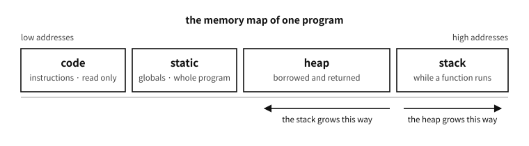

2 The regions of memory — where a program puts what
Looking back
A
. Both are in memory — but they are not mixed together in the same place. A program’s memory is divided into regions of different character, and each region has different rules. Some regions stay as they are until the program ends, some live only while one function runs, and some the programmer borrows and gives back personally. Draw this map first and all the later stories find their places.
By the end of this chapter
We first learn that the memory a program uses is not one lump but is divided into a few regions of different purpose. Code, fixtures, the workbench (the stack), the warehouse (the heap) — learn only the names and characters first and nearly every later chapter is read upon this map. Not one piece of C syntax appears yet.
Why divide it at all? Is memory not just one lump?
Then where does the rule “an uninitialised value is 0” come from?

Figure 2.1 — The map of memory one program uses. Nearly every later chapter is read on top of this picture.
2.1 Four regions, one metaphor
Think of a person working at a desk and the picture comes together.
| region | metaphor | what is placed there | how long it lives |
|---|---|---|---|
| code | the work order | the program’s instructions | the whole program (usually unmendable) |
| the static region | built-in shelves | values the whole program shares | the whole program |
| the stack | the workbench | temporary values needed by the work at hand | until that work ends |
| the heap | the warehouse | values whose size and lifetime you settle yourself | until it is given back |
Table 2.1
Code is only read. Rewriting the work order during execution is usually forbidden.
The static region takes its place when the program starts and stays as it is until it ends. That it is visible anywhere and always alive is both its strength and its danger — convenient, but a value that can change anywhere is hard to follow.
The stack is the workbench. Begin one task and you spread out on the bench what that task needs, and when the task ends you clear it away whole. It is fast and automatic but narrow — and once cleared away, the things in that place cannot be found again.
The heap is the warehouse. Ask “lend me this much” and it gives you room, and when you have finished you must give it back. The size can be settled during execution and it can be kept alive as long as you wish; in exchange the responsibility of returning what was borrowed lies with the person.
Q
. Why divide it at all? Is memory not just one lump?
A. Physically it is — the one corridor of lockers we shall see in chapter 5. The dividing is an agreement, and that agreement gives two things.
First, automatic management. Gather the temporary values one function uses in one region (the stack) and they can all be cleared away when that function ends. There is no need to look after them one by one.
Second, protection. Make the code region read-only and the program can be prevented from rewriting its own instructions by mistake (or an attacker from doing so on purpose). Giving different permissions per region is the basic defence of modern operating systems.
2.2 Why the static region divides in two — the strange name bss
In practice the static region divides again in two. The name is unfamiliar but the story is simple.
- Things with an initial value — for example something settled as “this value is 7 at first”. That 7 must really be inside the executable file.
- Things whose initial value is 0 — if the first value is 0, there is no reason to write a heap of zeros into the file. Only one number saying “fill this much with zeros” is written down, and the actual filling is done when the program starts.
The second region’s name is bss. It came from the abbreviation of a 1950s assembler instruction; the meaning has been forgotten but the name has crossed half a century. Thanks to this distinction, the executable of a program that “starts a table of a million slots all at zero” does not grow large.
Q
. Then where does the rule “an uninitialised value is 0” come from?
A. It holds for the static region only — and that 0 is not free but something somebody filled in. The operating system gives a place already filled with zeros, or on a machine with no operating system the program’s startup code turns a loop itself and fills it with zeros.
Conversely, a temporary value on the workbench (the stack) is not 0. It inherits as it stands the place some other work just used and left, so what remains there cannot be known. This difference is one of the places people learning C stumble at most often, and chapter 40 treats it formally.
2.3 The characters of the three regions contrasted
A table we shall keep using. For now it is enough to get the feel.
| static | stack | heap | |
|---|---|---|---|
| when the size is settled | at translation | at translation (usually) | during execution |
| lifetime | the whole program | until that work ends | until it is given back |
| tidying up | automatic | automatic | by the person |
| speed | fast | fastest | relatively slow |
| room to spare | fixed | narrow (usually a few MiB) | wide |
| common accidents | changed anywhere | overflow, referring to a dead place | leaks, giving back twice |
Table 2.2
The last row of this table takes up a good deal of the latter part of this book. C’s reputation as powerful and dangerous comes mostly from what happens when the rules of these three regions are broken.
In practice. A sense of how narrow the workbench is
Even on today’s computers, whose warehouse (the heap) is tens of gigabytes, the workbench (the stack) is narrow. Common defaults are 8 MiB on Linux and 1 MiB on Windows — a few thousandths of the whole memory.
So a beginner’s first collapse mostly happens here. Try to spread a big table whole on the workbench, or write a program that calls itself endlessly, and the workbench overflows and the program dies on the spot — the name is exactly that, stack overflow (the name of the world’s most famous programming question site came from here). The detailed numbers and remedies are treated in chapters 40 and 69.
A common misconception
. “Using a lot of memory makes a program slow”
2.4 Where this map will be used
For now it is enough to know the names. These four regions keep returning through the whole book.
| where | what |
|---|---|
| chapters 5 and 6 | addresses and alignment — the geography of the corridor the regions lie in |
| chapter 11 | the ladder of memory — even the same region differs in speed by cache |
| chapter 40 | lifetime and storage duration — what C’s grammar calls these regions |
| chapter 41 | dynamic memory — the discipline of borrowing from and returning to the warehouse |
| chapter 69 | the real map in operating systems and embedded work |
| chapter 70 | inside the allocator that manages the warehouse |
Table 2.3
We have seen what a program puts where. The next chapter looks briefly at what the operating system does for that program when it runs — the difference between a program and a process, and how a process is born.